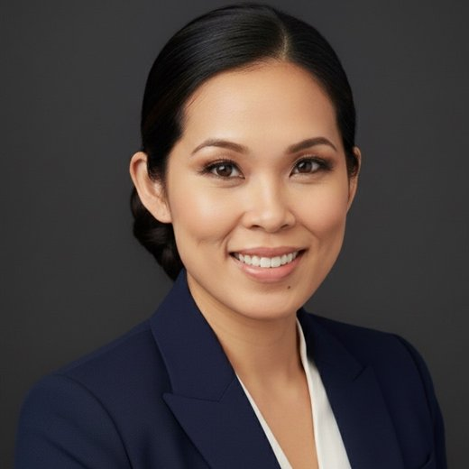

This role leads a CSA team driving Copilot & AI adoption across US Oil, Gas & Energy — M365 Copilot, Copilot Studio Agents, D365, Power Platform. I'm already in this exact org. I build Copilot Studio agents for the field, I know upstream/midstream/downstream, and I've earned CIO/CTO trust at energy Fortune 500s. Now I want to lead the team that scales it.
Kim Vaddi · Sr Solution Engineer, AMI Oil/Gas & Energy Specialist Sales · Houston, TX · linkedin.com/in/kimvaddi
◆ A domain-perfect stretch — the gap is people-management tenure, and I name it candidly.
Every role moved me closer to two things: the energy customer's outcome and the people who deliver it. Leading this CSA team isn't a left turn — it's the convergence point of my domain, my AI-building, and my decade of developing people.
I didn't change careers five times — I climbed one ladder toward this exact seat: a technical leader in energy who builds AI and develops people. I'm already in the US OG&E org, already building Copilot agents, already trusted by these customers. The only new rung is leading the team.
Microsoft's manager model is Model, Coach, Care. I've been living it without the title — co-chairing a 2,900-member community, mentoring sellers and SEs, and being named on the record as a "true partner" and "trusted technical advisor." Here's how that translates to leading a CSA team in this portfolio.
"Living the Culture" award ('23). I model the AI growth mindset by literally building the Copilot Studio agents I'd ask my team to deliver — and by giving customers candid guidance, even when it points away from a SKU.
I coach the agent-to-adoption motion I've personally run, and the business-value conversation with BDMs. Endorsed for "patient, candid coaching… so business owners can self-serve" and improving "seller and Solution Engineer effectiveness."
I develop talent before the org chart asks — Tex-E AI Workshop, G-Unity/HISD, BAM Education Liaison. I'd plug straight into Tech Boost, Tech Excel, and Tech Connect to grow my team's technical and BDM-engagement skills.
Remove blockers, get in the room when it matters, hand back the credit. Make the team's best work inevitable.
Anticipate, escalate, and clear what's slowing deployment and usage. Speed-to-value is the energy customer's currency.
Align technical and business-value paths to metrics; rigorous milestones; consumption growth and customer health week over week.
I'm there for them. They're not there for me. A leader's job is to make the team's best work inevitable — then hand them the credit.
I'm not learning this portfolio or this AI stack. I'm already in it — building Copilot agents for energy customers today.
Not a values poster — a leadership model aligned to the JD's accountabilities: customer engagement, Copilot & AI adoption, team development, and operational excellence. Tap a pillar to see the proof and what it looks like on the team I'd lead.
A CSA team wins when every energy customer is adopting Copilot and Agents, consumption is growing, and customer health is green week over week. My job is to coach that outcome and clear what blocks it.
Five on-the-record endorsements — strategy directors, GTM managers, sponsorship leads, and AMER SE&O / field-community partners. Verbatim. The themes — builds Copilot/AI for the field, trusted advisor, partner, delivers under pressure — are the themes of this job.
Kim is one of the most resourceful and dependable technical talents on our Houston team. The CERAWeek Wayfinder is the headline story… she exceeded expectations delivering a phone-friendly agentic experience with functionality we hadn't even scoped… The events team is now turning it into a template for future events, which is a real measure of impact. Kim leaned in, moved fast, and thought creatively under pressure.
Kim demonstrated exceptional initiative and impact during CERAWeek by stepping outside of her core responsibilities to design and build an agent within a very compressed timeline… a strong, tangible example of Microsoft "using Microsoft" to solve real problems. Kim consistently shows a willingness to stretch, take on new challenges, and deliver with excellence—making her a tremendous asset to the team.
Beyond her technical contributions, Kim shows up as a true partner—collaborative, solution-oriented, and always willing to test, iterate, and push things forward. That combination of partnership + execution + innovation is rare, and it's a big reason why the work we're doing together is gaining traction.
The agent Kim has built to navigate accounts and mine MSX for opportunities is thoughtful, highly practical, and grounded in real seller needs—it reflects both deep technical skill and a strong understanding of field realities… it has the potential to serve as a foundation that AMER SE&O can build upon and even extend into broader adoption through Corp GDC Ops.
Kim consistently demonstrates strong technical curiosity, field empathy, and a genuine commitment to improving seller and Solution Engineer effectiveness… During Orbex testing, she quickly diagnosed WDAC constraints on managed devices, clearly explained the root cause, and worked toward a viable workaround while keeping testers informed… She is viewed as a credible, approachable partner by the technical field community.
What a Sr Director most values, in three lines: Agentic AI delivery under pressure — turning a two-week scramble into a reusable, customer-grade asset (CERAWeek Wayfinder). Trusted technical advisor — patient, candid coaching on Power Apps vs. Azure trade-offs so business owners can self-serve. Houston team glue — equally credible with O&G customers, partners, and student/community audiences.
Numbers and endorsements tell you what I've done. This is who I am — and why this energy CSA team is the one I've been walking toward leading.

I love the moment a hard technical problem becomes someone else's superpower — when a seller, a customer, or a student suddenly sees what's possible and runs with it. For 17 years I've chased that moment one person at a time. Leading a team is how I make it happen at scale.
This role is built for someone exactly like me: deep in US Oil, Gas & Energy, fluent in Copilot & Agents, trusted by energy CIOs/CTOs. I clear the 8+ year technical bar with 17. The single gap is formal people-management tenure — and I name it plainly. Every claim below ties to a line in the posting.
I won't pretend otherwise — that's the one box I don't check on paper. What offsets it: I'm already inside this org, this AI stack, and these customers, so my ramp is "lead the people," not "learn the job." Here's how I'd de-risk the bet:
Give me this team and I won't make them more like me — I'll make them the energy industry's most trusted Copilot & AI advisors. I bring zero domain ramp, shipped agents, and 17 years of credibility energy customers already recognize. The one new thing is the title — and I'd close that gap faster than any outside hire could close the domain and AI gap I've already closed.
Because I already know the portfolio, the AI stack, and the customers, my first 90 days are about the team and the metrics — not learning the job. Tap a phase.
Real, on the record — the leading-before-the-title evidence a management bet is made on.
Recognized for how I work and lead — the culture signal that matters most for people leadership.
MSX opportunity-mining agent + CERAWeek Wayfinder; candidate to extend to Corp GDC Ops.
Technical community built and sustained — volunteer leadership and talent development without an org chart.
Credentialed and active in developing the next generation. View badges ▸
5 GitHub Copilot AI-assisted development workshops (150+ attendees in May, 2 in January 2026) and the Microsoft Build Reactor workshop (100+ registered) on AI agents & multi-agent systems on Azure AI Foundry.
This role leads a CSA team driving Copilot & AI across US Oil, Gas & Energy. I'm already in that org, already building the agents, already trusted by these customers. I'd skip the ramp most managers need — and pour that energy straight into developing the team, growing consumption, and keeping customer health green.